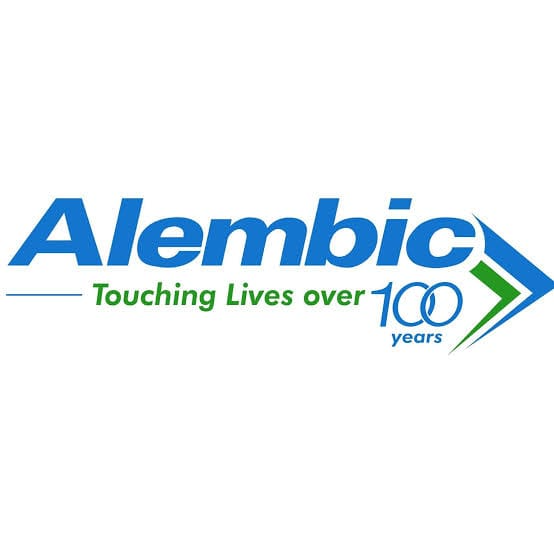
ALEMBIC (एलेम्बिक)
गुणवत्तापूर्ण स्वास्थ्य सेवाओं के प्रति प्रतिबद्धता।
55+ सालों का विश्वास एवं
पशु चिकित्सा का अनुभव
असली ब्रांडेड दवाइयाँ, सही सलाह और पौष्टिक पशु आहार। आपके पशुओं की देखभाल में, हम हमेशा आपके साथ।
हमारी फोटो और वीडियो की किताब देखें ↗दवा की उपलब्धता जानें, पर्ची भेजें और निश्चिंत होकर दुकान पर आएँ।
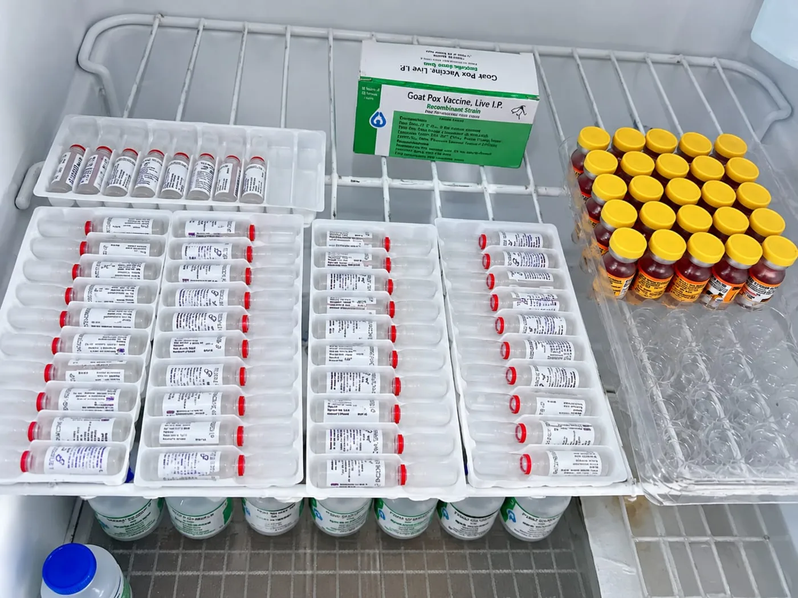
दूध देने वाले पशुओं से लेकर बछड़ों तक—दवा, सप्लीमेंट और देखभाल की जानकारी के लिए संपर्क करें।

गुणवत्तापूर्ण स्वास्थ्य सेवाओं के प्रति प्रतिबद्धता।
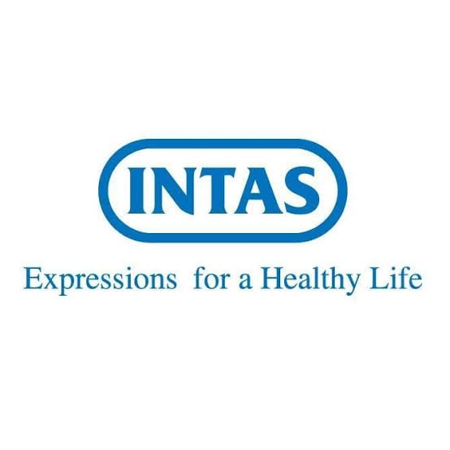
नवाचार के साथ बेहतर स्वास्थ्य की दिशा में प्रयास।
गुणवत्तापूर्ण स्वास्थ्य सेवाओं के माध्यम से जीवन की देखभाल।
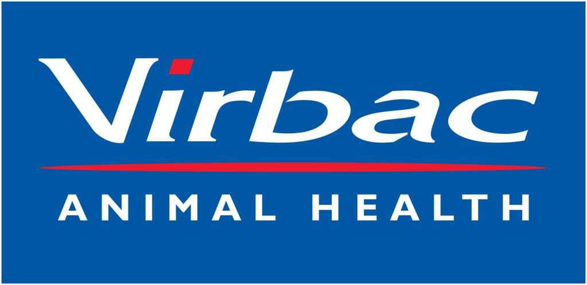
पशु स्वास्थ्य के लिए समर्पित।
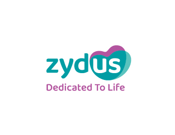
स्वास्थ्य सेवा और नवाचार के प्रति प्रतिबद्धता।
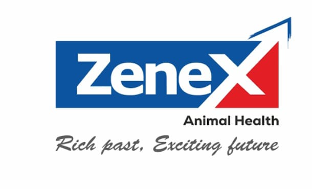
समृद्ध विरासत, उत्साहपूर्ण भविष्य।
हम सिर्फ verified और branded pharma कंपनियों की दवाइयाँ ही रखते हैं। जेनेरिक दवाइयाँ नहीं।
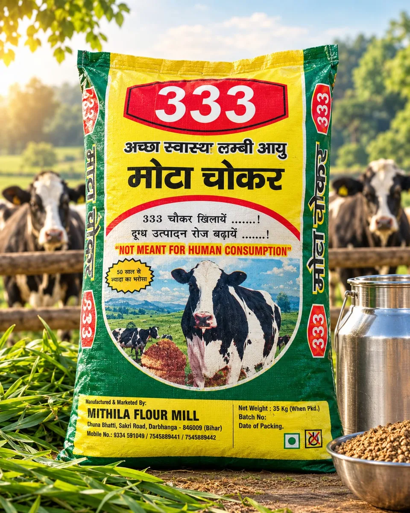
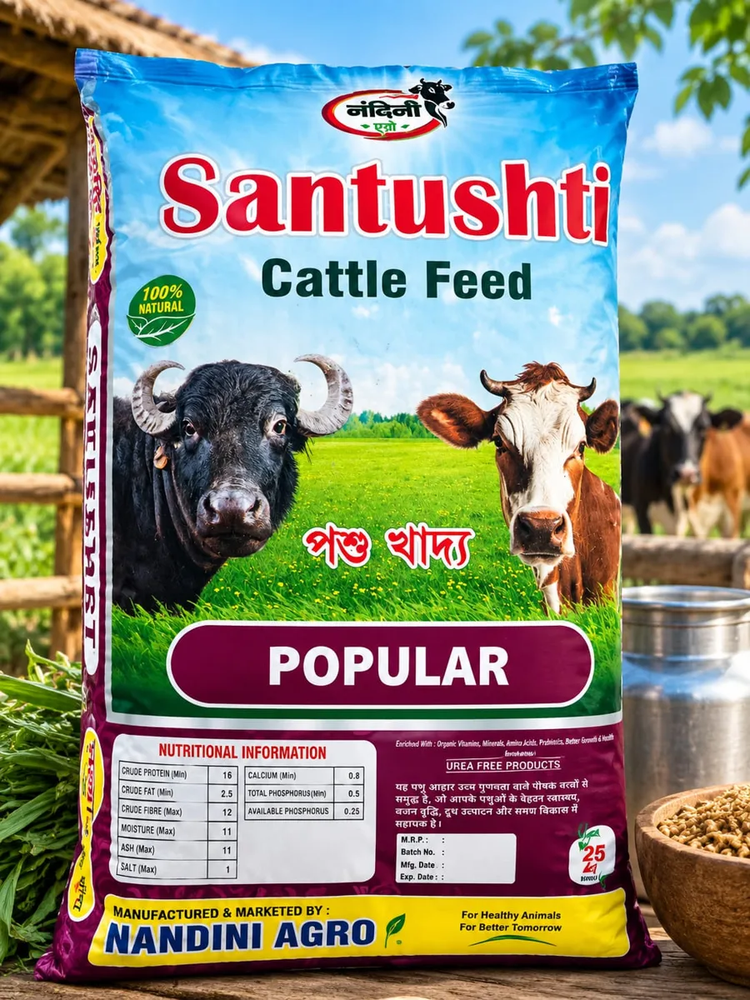
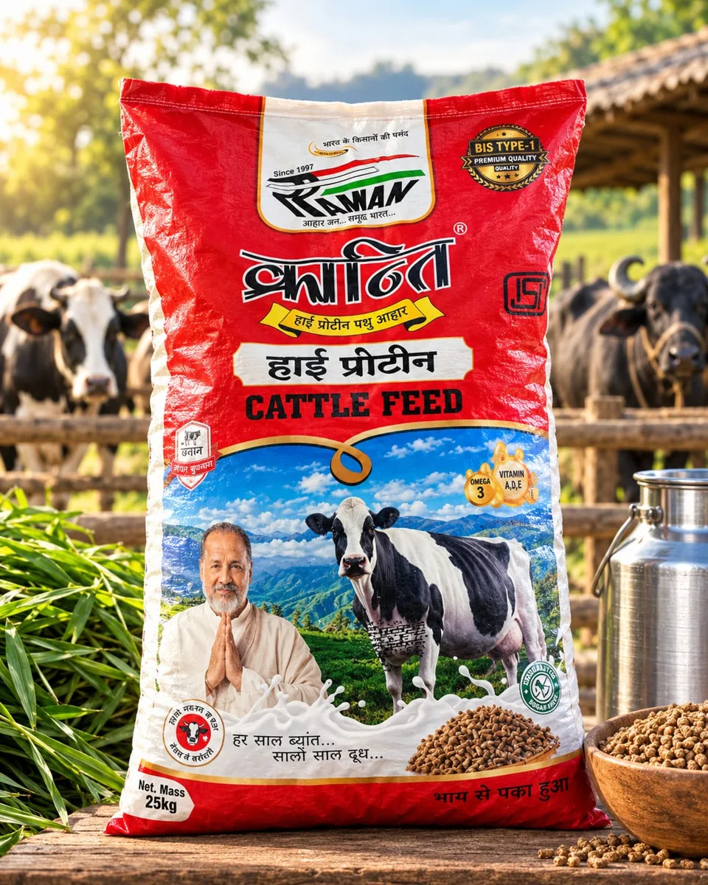
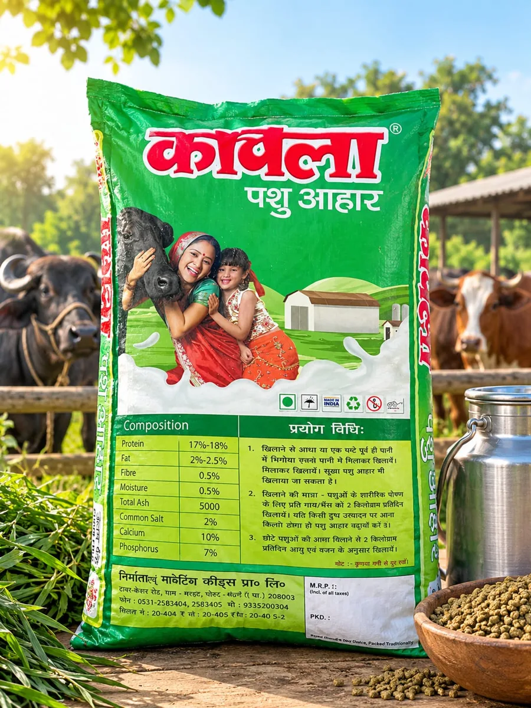
पैक की तस्वीरें पहचान के लिए हैं। भाव, पैक साइज़ और स्टॉक की पुष्टि फोन या WhatsApp पर करें। खरीदारी दुकान से ही होती है।
पीढ़ियों से पशुपालकों के साथ जुड़ा हमारा परिवार—सही दवा, सहज सलाह और भरोसेमंद सेवा के लिए।
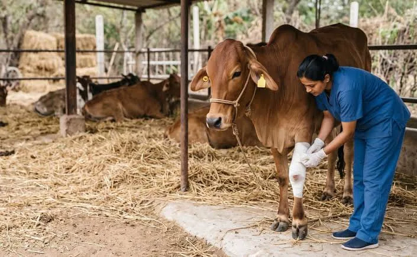
दादा जी • हमारी विरासत और विश्वास की नींव
पशु चिकित्सा, उपचार एवं खुराक का मार्गदर्शन
असली दवाइयों की उपलब्धता और आपकी सहायता
दवा का नाम याद नहीं? डॉक्टर की पर्ची या दवा के पैक की साफ़ तस्वीर WhatsApp पर भेजें।
WhatsApp पर बात करें ↗WhatsApp खोलें और तस्वीर जोड़ें।
हमसे बात करके उपलब्धता जानें।
दवा के साथ उपयोग का मार्गदर्शन लें।
दवाइयाँ, पशु आहार और सही मार्गदर्शन—एक ही जगह।
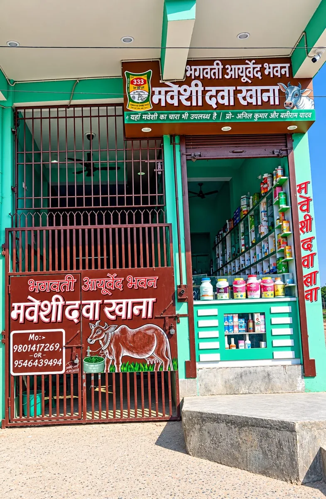
यही है आपकी अपनी दुकानमवेशी दवा खाना एवं परामर्श केन्द्र
पता :-दुकान का समय कॉल पर पूछ लें।
खरीदारी केवल दुकान पर • होम डिलीवरी नहीं
वीडियो देखने के लिए प्ले दबाएँ।
दुकान, पशु देखभाल और पशु आहार की सभी तस्वीरें और वीडियो। बड़ा देखने के लिए तस्वीर पर दबाएँ।
मुख्य दुकान वीडियो अपने-आप चलता है। गैलरी के वीडियो खोलने पर लोड होते हैं। पोस्टर में दी गई जानकारी के लिए दुकान से पुष्टि करें।
यह जानकारी और संपर्क की वेबसाइट है। दवा व पशु आहार की खरीदारी दुकान पर होती है। होम डिलीवरी उपलब्ध नहीं है।
हाँ। कॉल करें या डॉक्टर की पर्ची/दवा के पैक की तस्वीर WhatsApp पर भेजें। पुष्टि होने पर दुकान आएँ।
पशु के अनुसार खुराक बदलती है। अपनी तरफ़ से खुराक तय न करें; डॉक्टर की पर्ची साथ लाएँ और पशु चिकित्सा विशेषज्ञ से मार्गदर्शन लें।